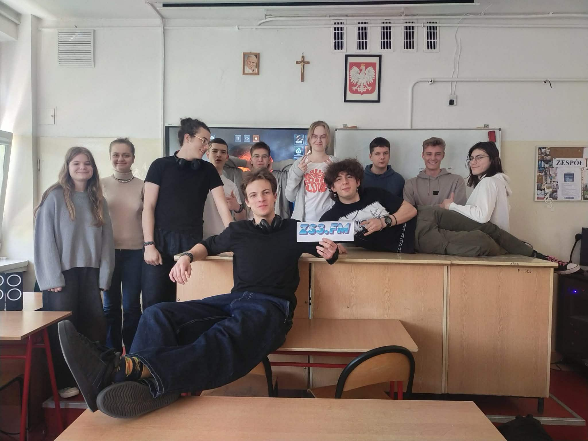
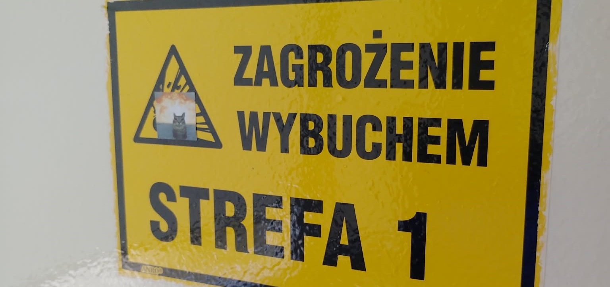
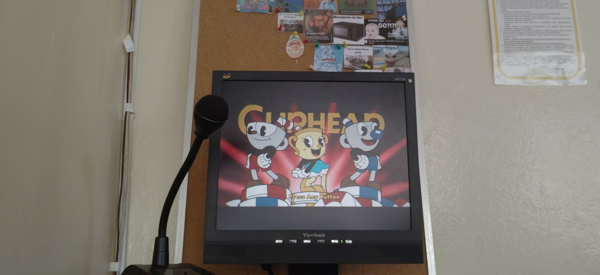

Oto nasz szkolny zespół radiowęzłowy. To my każdego dnia w szkole puszczamy dla was tylko najlepszą muzykę aby umilić wam szkolne dni :)

Ponad 10 osób zarządza codziennie naszą amatorkską szkolną stacją radiową. Postanowiliśmy więc również dać Wam głos na temat tego co
chcielibyście ewentualnie usłyszeć chillując na długich przerwach, tak też powstała ta strona pozwalająca dawać ile tylko dusza zapragnie
propozycji które zasilą naszą stale zwiększającą rozmiary playlistę radiową.

Codziennie staramy się wybrać coś dla każdego, żeby każdy
miał szansę usłyszeć ulubiony gatunek lub twórcę. 2 piętra są aktualnie podpięte pod radiowęzeł, jednak już istnieją plany ulepszenia
i dodania parteru jak i piwnicy tak aby na każdym poziomie szkoły można było usłyszeć nasze radio.

Z góry dziękujemy za propozycje i przyjmujemy też słowa krytyki lub pochwały, czy też ewentualne pytania.
Pan Redaktor